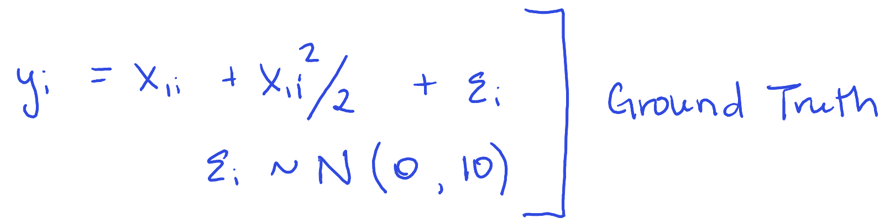
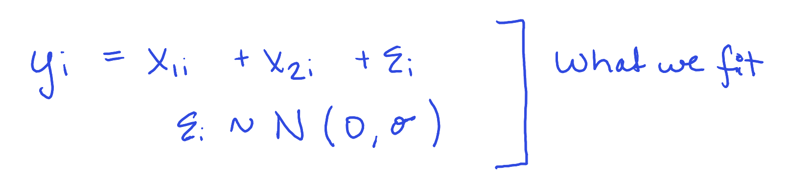

model <-lm(y ~ x1 + x2, data = data)summary(model)
Call:
lm(formula = y ~ x1 + x2, data = data)
Residuals:
Min 1Q Median 3Q Max
-35.805 -15.641 -1.853 16.714 44.165
Coefficients:
Estimate Std. Error t value Pr(>|t|)
(Intercept) 16.457 1.913 8.605 1.37e-13 ***
x1 -20.473 24.200 -0.846 0.400
x2 -21.413 24.238 -0.883 0.379
---
Signif. codes: 0 '***' 0.001 '**' 0.01 '*' 0.05 '.' 0.1 ' ' 1
Residual standard error: 19.08 on 97 degrees of freedom
Multiple R-squared: 0.07991, Adjusted R-squared: 0.06094
F-statistic: 4.212 on 2 and 97 DF, p-value: 0.01761
How Bad is it?
model2 <-lm(y ~ x1 +I(x1^2), data = data)summary(model2)
Call:
lm(formula = y ~ x1 + I(x1^2), data = data)
Residuals:
Min 1Q Median 3Q Max
-29.1382 -6.9539 -0.2898 5.4694 30.6999
Coefficients:
Estimate Std. Error t value Pr(>|t|)
(Intercept) -1.30483 1.55887 -0.837 0.405
x1 0.90094 0.17844 5.049 2.08e-06 ***
I(x1^2) 0.51842 0.03407 15.214 < 2e-16 ***
---
Signif. codes: 0 '***' 0.001 '**' 0.01 '*' 0.05 '.' 0.1 ' ' 1
Residual standard error: 10.41 on 97 degrees of freedom
Multiple R-squared: 0.7261, Adjusted R-squared: 0.7205
F-statistic: 128.6 on 2 and 97 DF, p-value: < 2.2e-16
Models


Simulation – Questions
How does \(\hat{s}\) compare to \(\sigma=10\)?
How does \(\hat\alpha\) compare to true value \(\alpha=1\)?
How does \(\hat\beta\) compare to true value \(\beta=0\)?
Simulation – Linearity assumption
sim_linearity <-function(i, n =100, formula = y ~ x1+x2, trueformula = y ~ x1 +I(x1^2)) { data <-tibble(x1 =seq(-10, 10, length.out = n) +runif(n, -.1, .1),x2 =seq(-10, 10, length.out = n) +runif(n, -.1, .1),y = x1 + x1^2/2+rnorm(n, 0, 10) # Definitely not additive or linear ) model <-lm(formula = formula, data = data) model2 <-lm(formula = trueformula, data = data)tibble(i = i, data =list(data), model =tibble(type =c("misspec", "actual"), model =list(model, model2)) )}set.seed(249382736)sim_n <-map_df(1:1000, ~sim_linearity(.)) |>unnest(model)
Simulation – Getting Estimates Out
library(broom) # very useful for tidying nested model dataframessim_n <- sim_n |>mutate(# One line per parametertidy_model = purrr::map(model, tidy), # One line per modelglance_model = purrr::map(model, glance))